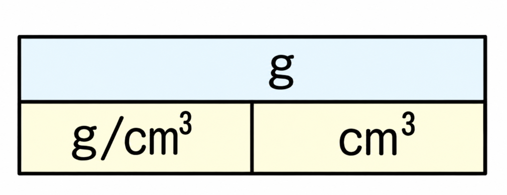

砂糖やろうそくを熱すると黒くこげますが、食塩はこげません。この違いを生むのが、物質の中に炭素がふくまれているかどうかです。
炭素を含む化合物を有機物といいます。有機物を加熱すると、黒く焦げて炭になったり、燃えて気体の二酸化炭素が発生したりします。有機物以外の物質(金属、水、空気など)を無機物といいます。
▶ 炭素の有無を確かめる方法
物質を燃焼さじにのせて集気ビンの中で燃やし、火が消えたら石灰水を入れてよく振ります。石灰水が白くにごれば、燃えた気体の中に二酸化炭素があった証拠、つまりその物質には炭素がふくまれていた(有機物だった)ということになります。
▶ 水があるかを確かめる方法
集気ビンの内側が白くくもったら、塩化コバルト紙をつけてみましょう。塩化コバルト紙は水に反応すると青色から赤色にかわります。赤く変化すれば、くもりの正体は水だとわかります。
- 有機物……炭素をふくむ化合物。燃やすと二酸化炭素が発生する。
- 無機物……有機物以外の物質(金属・水・空気など)。
- 石灰水が白くにごる → 二酸化炭素が発生した証拠
- 塩化コバルト紙が青→赤に変化 → 水が発生した証拠
🏆 ベストタイム
10円玉やスプーンのような金属には、他の物質にはない共通の性質があります。
- 展性
- たたくと広がる性質。【例】金ぱく
- 延性
- ひっぱると伸びる性質。【例】針金
- 伝導性
- 電気・熱をよく通す。
- 光沢
- みがくと光る(金属光沢)。
たたくと広がる性質を展性、ひっぱると伸びる性質を延性といいます。そのほか、電気や熱をよく通す性質と、みがくと光る金属光沢も金属に共通する性質です。
金属の性質をもつ物質(鉄、アルミニウム、銅など)を金属、それ以外の物質(水、空気、炭素など)を非金属といいます。
- 展性……たたくと広がる／延性……ひっぱると伸びる
- 金属はすべて、電気・熱をよく通し、みがくと光る(金属光沢)
- 金属……鉄・アルミニウム・銅など／非金属……それ以外(水・空気・炭素など)
🏆 ベストタイム
ガスバーナーには上下2つのねじがあります。上側が空気調節ねじ、下側がガス調節ねじです。
- A
- 空気調節ねじ……空気の量を調節する
- B
- ガス調節ねじ……ガスの量を調節する
- 元栓
- ガスの元を止める・出すコック
▶ 点火の手順
①空気調節ねじ・ガス調節ねじが閉まっていることを確認 → ②元栓を開く → ③マッチに火をつけ、斜め下から近づける → ④ガス調節ねじを開いて点火 → ⑤空気調節ねじを開いて炎を青色にする、という順番です。
▶ 消火の手順
①空気調節ねじを閉める → ②ガス調節ねじを閉める → ③元栓を閉める。点火と消火はちょうど逆の順番になっている点がポイントです。炎が赤色のときは空気が不足している不完全燃焼の状態です。
- 点火の順番……下(ガス)→上(空気)の順に開く
- 消火の順番……上(空気)→下(ガス)の順に閉める
- 炎が赤色のときは空気不足(不完全燃焼)。空気調節ねじを開いて青色にする。
🏆 ベストタイム
メスシリンダーは、物体や液体の体積を正確に測る器具です。液体を入れると、表面が水平ではなく少しへこんだ形(メニスカス)になります。
目の位置は液面と同じ高さにし、液面のへこんだ部分を真横から読みます。1目盛りの10分の1まで目分量で読みとり、ちょうど目盛りの位置にあるときも「.0」を省略しません(例:47.0cm³)。
- 目の位置は液面と同じ高さ、真横から読む
- 液面のへこんだ部分の目盛りを読む
- 1目盛りの10分の1まで目分量で読みとる
🏆 ベストタイム
見た目がよく似た金属でも、同じ体積で比べると重さが違うことがあります。この「ぎっしり詰まり具合」を数値で表したものが密度です。密度は1cm³あたりの質量のことで、単位はg/cm³(グラム毎立方センチメートル)です。
密度(g/cm³) ＝ 質量(g) ÷ 体積(cm³)

| 物質名 | 密度(g/cm³) | 物質名 | 密度(g/cm³) |
|---|---|---|---|
| 銀 | 10.50 | 水 | 1.00 |
| 鉄 | 7.87 | 氷 | 0.92 |
| 銅 | 8.96 | マグネシウム | 1.74 |
| アルミニウム | 2.70 | ヒノキ | 0.49 |
水の密度(1g/cm³)より密度が大きい物質は水に沈み、水の密度より小さい物質は水に浮きます。上の表では、氷とヒノキが水に浮きます。
- 密度(g/cm³) ＝ 質量(g) ÷ 体積(cm³)
- 密度は物質ごとに決まった値をとるので、物質を見分ける手がかりになる
- 密度が1g/cm³より大きい → 水に沈む／小さい → 水に浮く